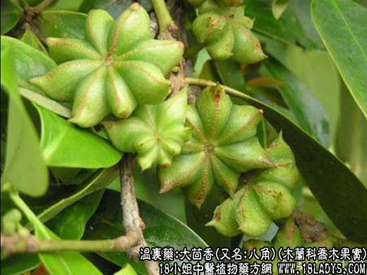

【中药概述】
大茴香，别名舶上茴香、八角茴香、舶茴香、八角珠、八角香、八角大茴、八角、原油茴、八月珠、大料、五香八角，为木兰科常绿小乔木八角茴香树的果实。辛、温。归肝、肾、脾胃经。
1．暧肝止痛：用于寒疝腹痛，腰痛，睾丸肿痛等症。可与同类药等同用。
2．温中和胃：用于胃寒呕吐，食欲不振等。
【临证应用】
寒湿腰痛，本品炒研，每服6g，饭前盐汤送下。外以糯米炒热，盛袋，敷于痛处。
【化学成分】
茴香主含挥发油约（主要成分茴香醚、胡椒酚、茴香酮蒎烯）5％，脂肪油22％，蛋白质、树脂等。
【用量用法】
3——10g，水煎服，或入丸、散剂。
【使用注意】
《本草纲目》记载：“大茴香性热，多食伤目发疮，食料不宜过用”。不良反应见头晕、呕吐、面色苍白。
【附】
莽草子（为木兰科植物狭叶茴香的种子）。辛，温；有毒。祛风消肿。用于治疗头风久痛，痛肿，乳痈，皮肤麻痹，瘰疬，癣疥，风虫牙痛等。
【化学成分】
含莽草毒素、莽草酸、莽草亭和挥发油等。
【用法用量】
外用，不可内服。
【注】
莽草子易与大茴香混淆，商品常作伪品大茴香出售。